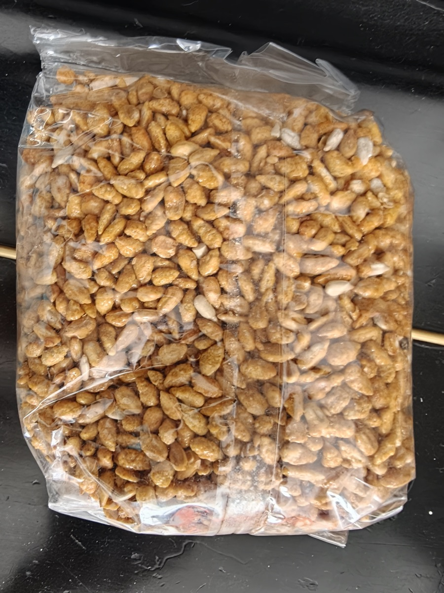
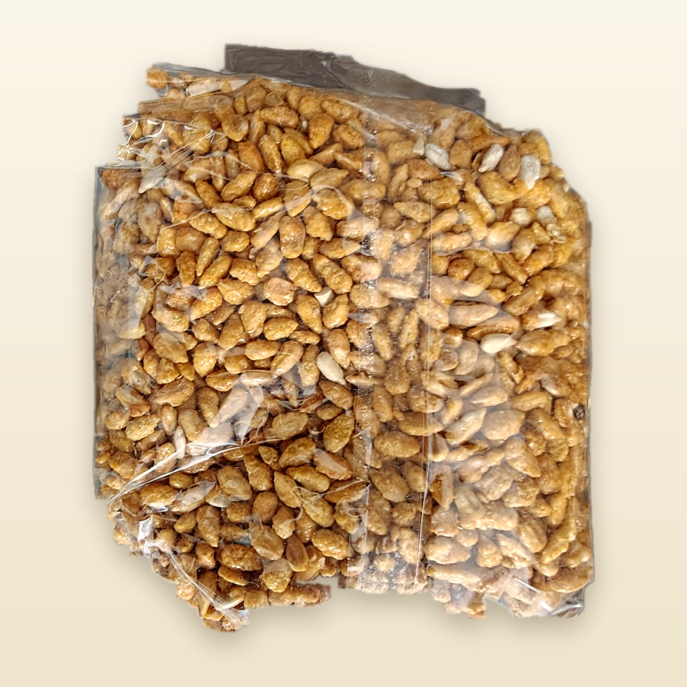
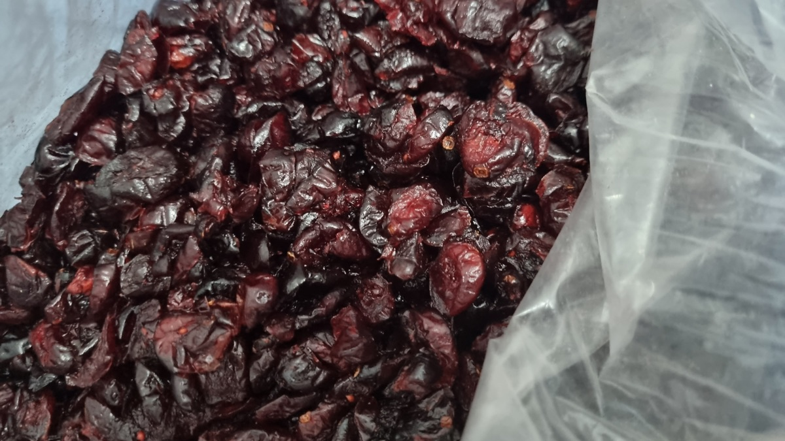
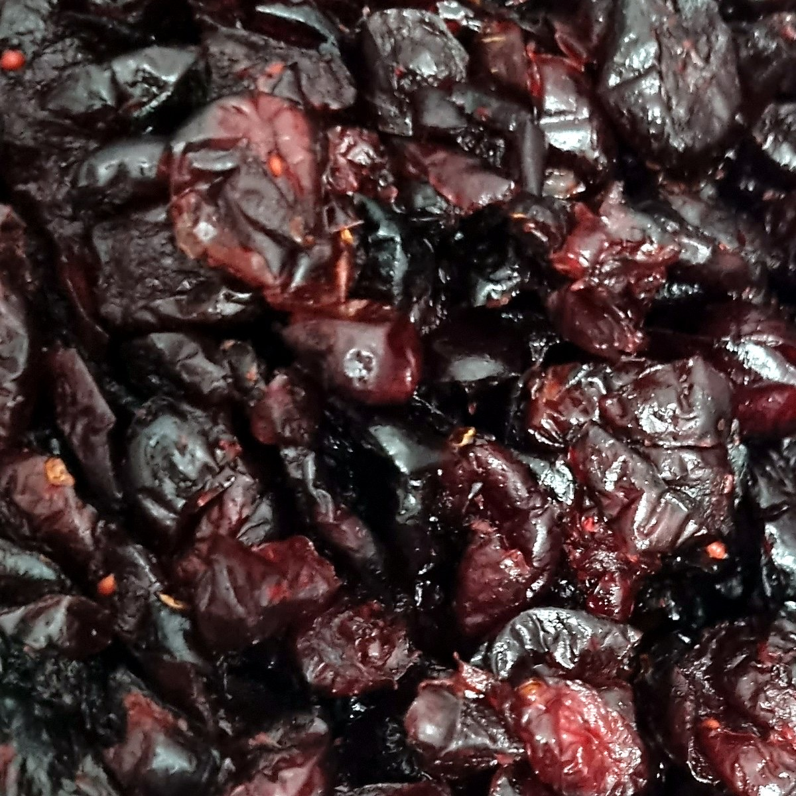
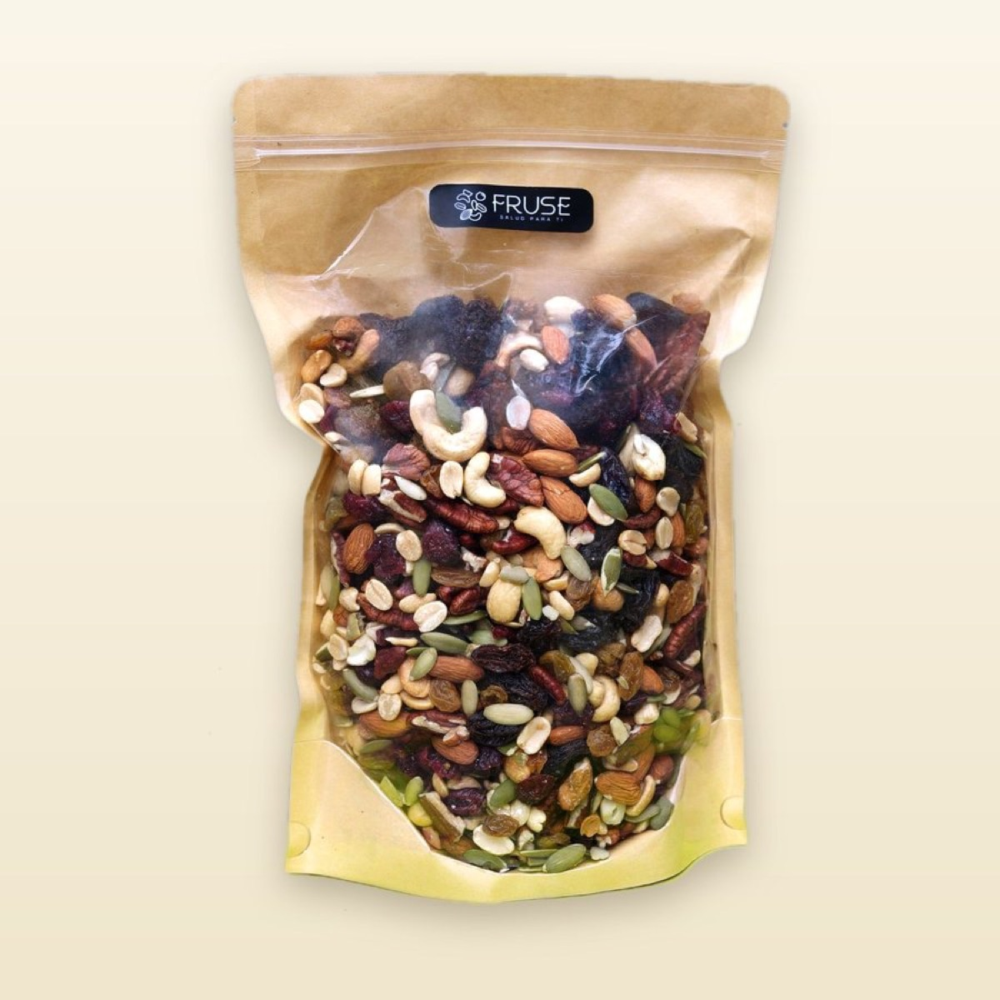
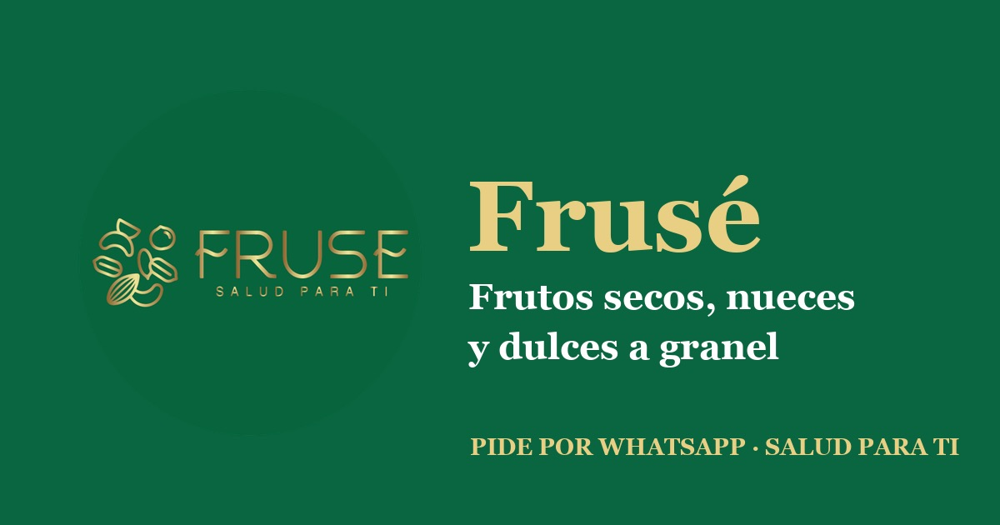

Frusé.
Frusé sells nuts, dried fruit and candy by weight in Mexico City, in 250 g, 500 g, 750 g and 1 kg bags. Instead of building a second system, I pointed the Faci setup at it: same Sheets service account, same Claude Code skills for writing and publishing listings, same catalog generator. The new piece is a photo pipeline, because bulk products photographed on a kitchen table don't sell.
Phone photos in, catalog photos out
mejorar_fotos.py is driven by a JSON spec that maps each SKU to its source photos and a framing mode.
It fixes EXIF orientation, crops to a 1200 px square, trims bag and background edges, places the product
on a warm cream background and tunes contrast, color and sharpness. Originals are never touched, so
changing one line of the spec and re-running is safe.


Bag on a dark table: the "K" mode finds the bag, cuts it out and recenters it.


Loose product: a focal point and zoom in the spec crop the plastic out of frame.
Same platform, second brand
-
Pricing by weight in the SheetCost per kg, packaging, proposed and final price, real profit percentage and delivery price for each presentation. Apps Script sets up the tabs and keeps a monthly sales summary, same as Faci.
-
Reuse instead of copyFrusé uses Faci's Python environment and service account, so there is no second credential to manage.
/redactar-descripcionesand/publicar-productosare the same skills reading a different Sheet. -
Catalog with a weight selectorThe PWA generator got a weight selector for bulk products (pieces stay per unit) and the green and gold brand. It deploys with
git pushto Fluent Ops. -
Images prepared for Rappi41 product images resized to Rappi's format, ready for the catalog upload.
-
Honest backlogIt is still in progress: 25 of the 49 SKUs don't have photos yet and 31 have per-gram prices. A
PENDIENTES.mdfile tracks every gap by name so the next session starts where the last one stopped.
Logo and catalog

